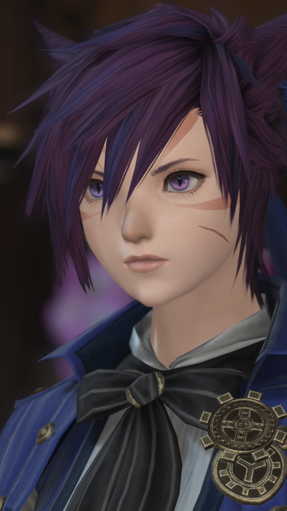
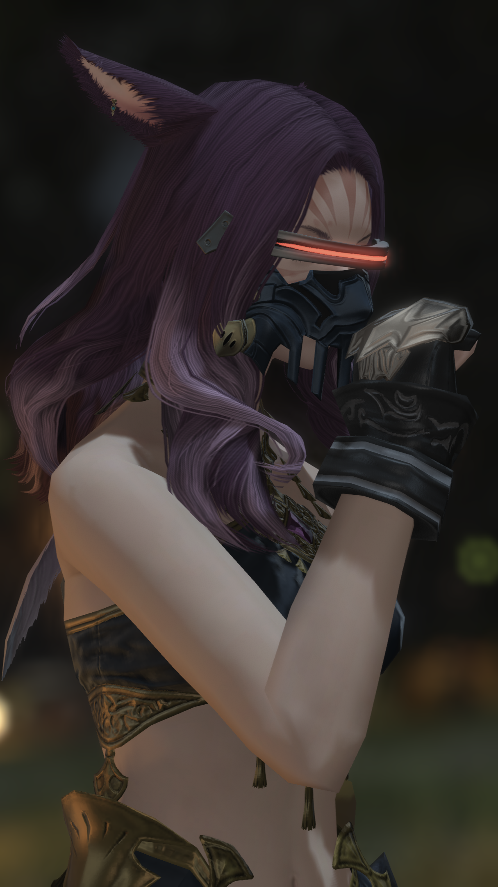
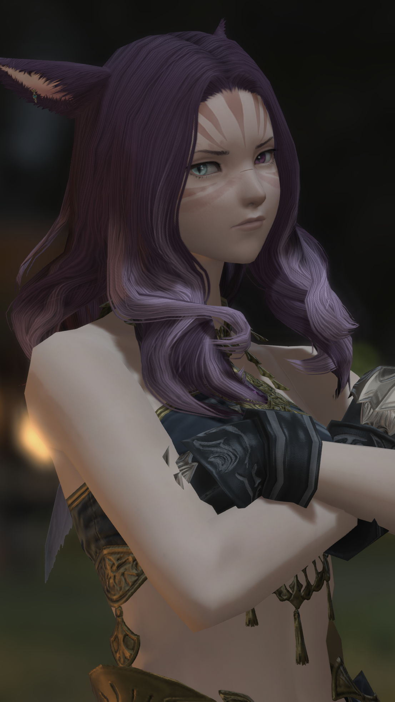

01 Cat-lance
| 名前 | にゃんすろっと |
|---|---|
| 種族 | ミコッテ（サンシーカー） |
| メイン武器 | チャクラム（踊り子） |
| 年齢 | 10代後半～20代前半 |
| 性別 | 女性 |
| 身長 | 149cm |
| 誕生日 | 3月15日 |
| 出身 | フランス |
| 好きなもの | くぁーる、KoRの皆 |
| 嫌いなもの | 雷、機械全般、早起き |
| スローガン | 是は、証明の戦いである。 |

PROFILE
『アーサー王と終焉の庭』という物語に登場する、円卓の騎士ランスロットの”魂”の側面。
とある存在に”記憶”の側面を取り上げられていたため、世界が終末から救われるまで、己の過去をはっきりと思い出せずにいた。
”魂”が導くまま皆の理想の騎士になろうとしていたが、ランスロットという男の顛末を知った彼女は、自分が”自分”として生まれ変わった意味を証明するために戦うことを決意する。
ランスロットの魂を持った、限りなくランスロットから遠い存在。
元KoRメンバー。
エオルゼアで出会った”異なる世界”の円卓の騎士たちと、光の戦士として冒険を共にした。
KoRは現在解体されており、メンバーはそれぞれの冒険に向かった。
彼女も数年の冒険を経て様々な腕を磨き、現在はグリダニアを中心に活動している。
DETAIL
元KoRメンバーであり、同じくランスロットを源流に持つ「シュヴァリエ」と交友が深い。
シュヴァリエの過去について全てを知るわけではないが、似たような顛末を辿っていることは悟っており、彼の側で支えられる存在になれればと切に願っている。
また、ナナモ女王殺害の容疑をかけられた際、逃避した先で知り合った「オルシュファン」および山都”イシュガルド”と強い関係性を持つ。
守護天節の際に降霊を行ったり、生命エーテルの一部をその身に宿したりと、様々な暴挙に出ているが、その全てに「アンブローズ」が一口噛んでいるらしい。
02 Cat-bsk
| 名前 | にゃーさーかー |
|---|---|
| 種族 | ミコッテ（サンシーカー） |
| メイン武器 | ナックル（格闘士） |
| 年齢 | 10代後半～20代前半 |
| 性別 | 女性 |
| 身長 | 162cm |
| 誕生日 | 3月15日 |
| 出身 | フランス |
| 好きなもの | 戦闘、食事、睡眠 |
| 苦手なもの | 自分、アーサー、ガウェイン、ガレス |
| スローガン | --- |


PROFILE
DETAIL